本文将主要分享以下四个方面的内容：
首先我们先来看一下 API 编程范式的需求来源。
在 Kubernetes 里面， API 编程范式也就是 Custom Resources Definition(CRD)。我们常讲的 CRD，其实指的就是用户自定义资源。
为什么会有用户自定义资源问题呢？
随着 Kubernetes 使用的越来越多，用户自定义资源的需求也会越来越多。而 Kubernetes 提供的聚合各个子资源的功能，已经不能满足日益增长的广泛需求了。用户希望提供一种用户自定义的资源，把各个子资源全部聚合起来。但 Kubernetes 原生资源的扩展和使用比较复杂，因此诞生了用户自定义资源这么一个功能。
我们首先具体地介绍一下 CRD 是什么。
CRD 功能是在 Kubernetes 1.7 版本被引入的，用户可以根据自己的需求添加自定义的 Kubernetes 对象资源。值得注意的是，这里用户自己添加的 Kubernetes 对象资源都是 native 的、都是一等公民，和 Kubernetes 中自带的、原生的那些 Pod、Deployment 是同样的对象资源。在 Kubernetes 的 API Server 看来，它们都是存在于 etcd 中的一等资源。
同时，自定义资源和原生内置的资源一样，都可以用 kubectl 来去创建、查看，也享有 RBAC、安全功能。用户可以开发自定义控制器来感知或者操作自定义资源的变化。
下面我们来看一个简单的 CRD 实例。下图是一个 CRD 的定义。
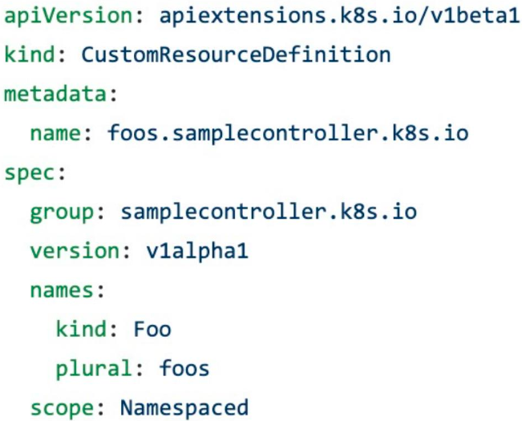
首先最上面的 apiVersion 就是指 CRD 的一个 apiVersion 声明，声明它是一个 CRD 的需求或者说定义的 Schema。
kind 就是 CustomResourcesDefinition，指 CRD。name 是一个用户自定义资源中自己自定义的一个名字。一般我们建议使用“顶级域名.xxx.APIGroup”这样的格式，比如这里就是 foos.samplecontroller.k8s.io。
spec 用于指定该 CRD 的 group、version。比如在创建 Pod 或者 Deployment 时，它的 group 可能为 apps/v1 或者 apps/v1beta1 之类，这里我们也同样需要去定义 CRD 的 group。
下图就是上图所定义的 CRD 的一个实例。
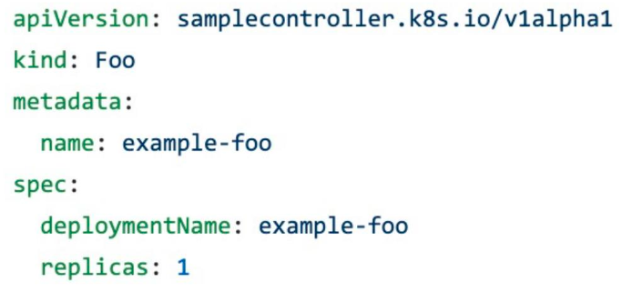
我们来看一个包含校验的 CRD 定义：
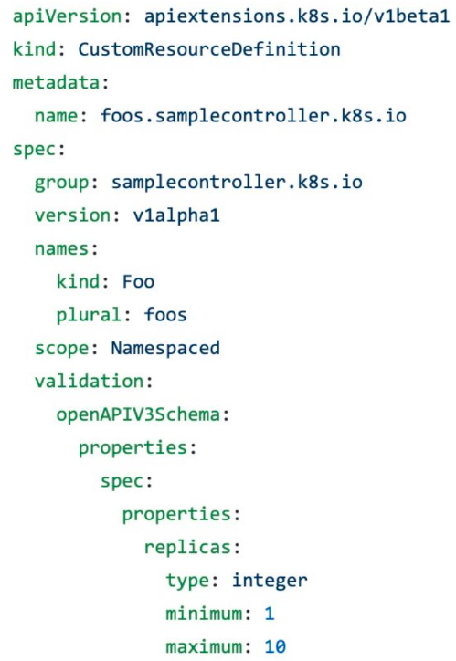
可以看到这个定义更加复杂了，validation 之前的字段我们就不再赘述了，单独看校验这一段。
它首先是一个 openAPIV3Schema 的定义，spec 中则定义了有哪些资源，以 replicas 为例，这里将 replicas 定义为一个 integer 的资源，最小值为 1，最大值是 10。那么，当我们再次使用这个 CRD 的时候，如果我们给出的 replicas 不是 int 值，或者去写一个 -1，或者大于 10 的值，这个 CRD 对象就不会被提交到 API Server，API Server 会直接报错，告诉你不满足所定义的参数条件。
再来看一下带有状态字段的 CRD 定义。
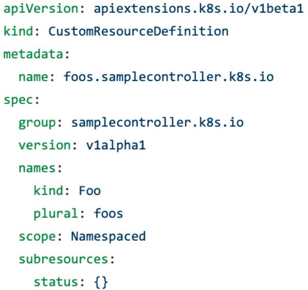
我们在使用一些 Deployment 或 Pod 的时候，部署完成之后可能要去查看当前部署的状态、是否更新等等。这些都是通过增加状态字段来实现的。另外，Kubernetes 在 1.12 版本之前，还没有状态字段。
状态实际上是一个自定义资源的子资源，它的好处在于，对该字段的更新并不会触发 Deployment 或 Pod 的重新部署。我们知道对于某些 Deployment 和 Pod，只要修改了某些 spec，它就会重新创建一个新的 Deployment 或者 Pod 出来。但是状态资源并不会被重新创建，它只是用来回应当前 Pod 的整个状态。上图中的 CRD 声明中它的子资源的状态非常简单，就是一个 key:value 的格式。在 "{}" 里写什么，都是自定义的。
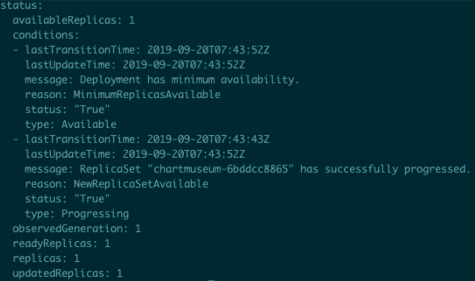
以一个 Deployment 的状态字段为例，它包含 availableReplicas、当前的状态（比如更新到第几个版本了、上一个版本是什么时候）等等这些信息。在用户自定义 CRD 的时候，也可以进行一些复杂的操作来告诉别的用户它当前的状态如何。
下面我们来具体演示一下 CRD。
我们这里有两个资源：crd.yaml 和 example-foo.yaml。
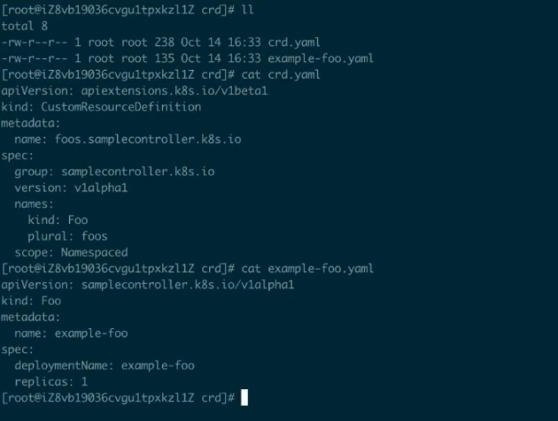
首先创建一下这个 CRD 的 Schema 让我们的 Kubernetes Server 知道该 CRD 到底是什么样的。创建的方式非常简单，就是 "kuberctl create -f crd.yaml"。
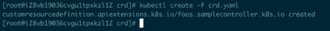
通过 "kuberctl get crd" 可以看到刚才的 CRD 已经被创建成功了。
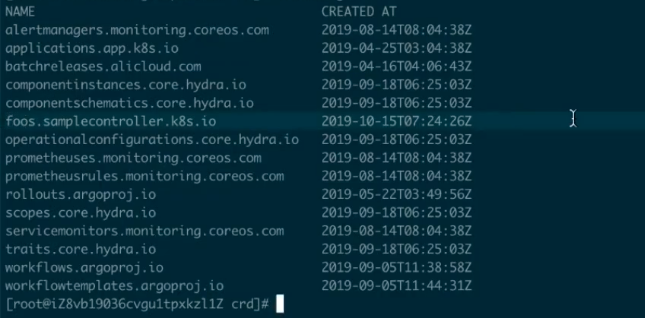
这个时候我们就可以去创建对应的资源 "kuberctl create -f example-foo.yaml"：
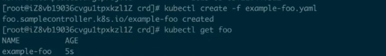
下面来看一下它里面到底有什么东西 "kubectl get foo example-foo -o yaml" :
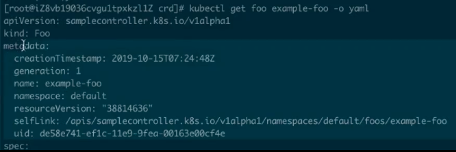
可以看到它是一个 Foo 的资源，spec 就是我们刚才所定义的，被选中的部分是基本上所有的 Kubernetes 的 metadata 资源中都会有的。因此，创建该资源和我们正常创建一个 Pod 的区别并不大，但是这个资源不是一个 Pod，也不是 Kubernetes 本身内置的资源，这就是一个我们自己创建的资源。从使用方式和使用体验上来说，和 Kubernetes 内置资源的使用几乎一致。
只定义一个 CRD 其实没有什么作用，它只会被 API Server 简单地计入到 etcd 中。如何依据这个 CRD 定义的资源和 Schema 来做一些复杂的操作，则是由 Controller，也就是控制器来实现的。
Controller 其实是 Kubernetes 提供的一种可插拔式的方法来扩展或者控制声明式的 Kubernetes 资源。它是 Kubernetes 的大脑，负责大部分资源的控制操作。以 Deployment 为例，它就是通过 kube-controller-manager 来部署的。
比如说声明一个 Deployment 有 replicas、有 2 个 Pod，那么 kube-controller-manager 在观察 etcd 时接收到了该请求之后，就会去创建两个对应的 Pod 的副本，并且它会去实时地观察着这些 Pod 的状态，如果这些 Pod 发生变化了、回滚了、失败了、重启了等等，它都会去做一些对应的操作。
所以 Controller 才是控制整个 Kubernetes 资源最终表现出来的状态的大脑。
用户声明完成 CRD 之后，也需要创建一个控制器来完成对应的目标。比如之前的 Foo，它希望去创建一个 Deployment，replicas 为 1，这就需要我们创建一个控制器用于创建对应的 Deployment 才能真正实现 CRD 的功能。
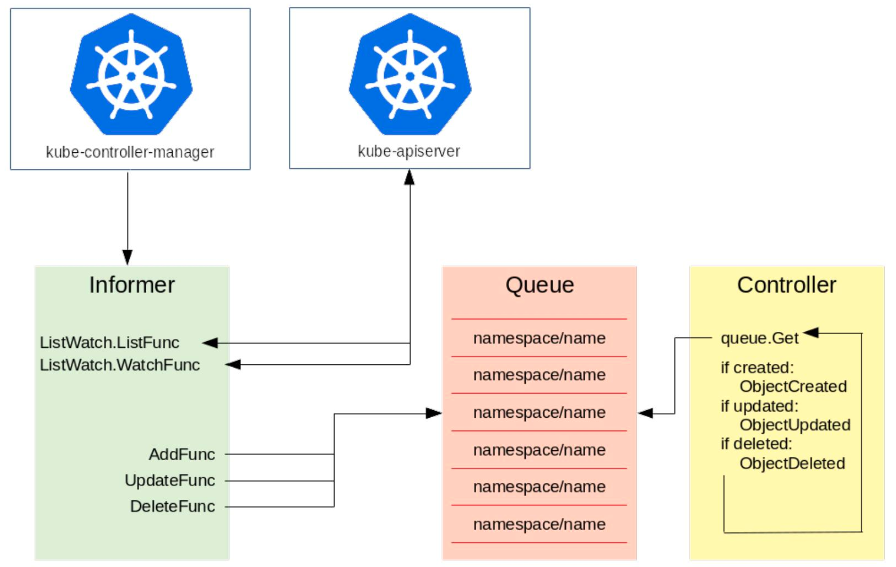
这里以 kube-controller-manager 为例。
如上图所示，左侧是一个 Informer，它的机制就是通过去 watch kube-apiserver，而 kube-apiserver 会去监督所有 etcd 中资源的创建、更新与删除。Informer 主要有两个方法：一个是 ListFunc；一个是 WatchFunc。
Informer 接收到了对象的需求之后，就会调用对应的函数（比如图中的三个函数 AddFunc, UpdateFunc 以及 DeleteFunc），并将其按照 key 值的格式放到一个队列中去，key 值的命名规则就是 "namespace/name"，name 就是对应的资源的名字。比如我们刚才所说的在 default 的 namespace 中创建一个 foo 类型的资源，那么它的 key 值就是 "default/example-foo"。Controller 从队列中拿到一个对象之后，就会去做相应的操作。
下图就是控制器的工作流程。
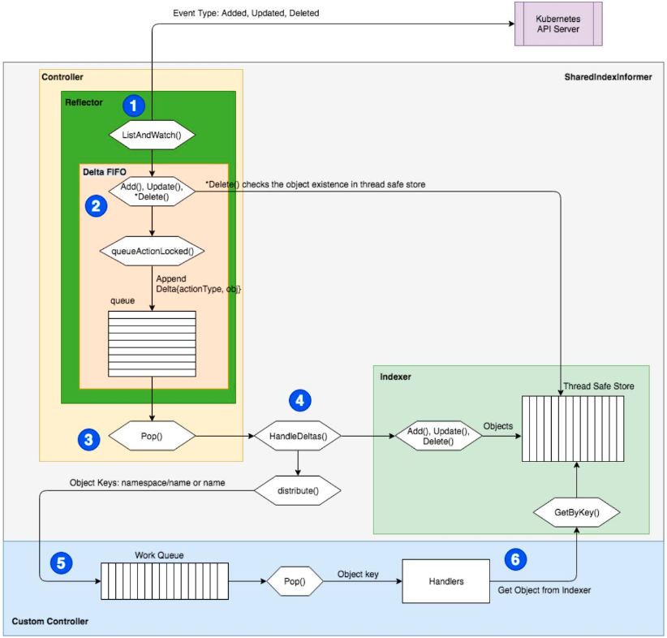
首先，通过 kube-apiserver 来推送事件，比如 Added, Updated, Deleted；然后进入到 Controller 的 ListAndWatch() 循环中；ListAndWatch 中有一个先入先出的队列，在操作的时候就将其 Pop() 出来；然后去找对应的 Handler。Handler 会将其交给对应的函数（比如 Add(), Update(), Delete()）。
一个函数一般会有多个 Worker。多个 Worker 的意思是说比如同时有好几个对象进来，那么这个 Controller 可能会同时启动五个、十个这样的 Worker 来并行地执行，每个 Worker 可以处理不同的对象实例。
工作完成之后，即把对应的对象创建出来之后，就把这个 key 丢掉，代表已经处理完成。如果处理过程中有什么问题，就直接报错，打出一个事件来，再把这个 key 重新放回到队列中，下一个 Worker 就可以接收过来继续进行相同的处理。
本节课的主要内容就到此为止了，这里为大家简单总结一下：